Humanidades digitales aplicadas a la Filología árabe · Escuela de Estudios Árabes (CSIC), Granada
Digital Humanities Applied to Arabic Philology
From Texts to a Cultural System
Maxim Romanov
CSIC · November 18, 2026 · Sala Julián Ribera, CCHS-CSIC, Madrid · Universität Hamburg
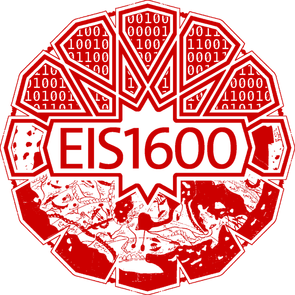
Structure
١State of the field
٢My contributions
٣Research at the Escuela
Part
1
State of the field
What digital Arabic philology can investigate, and what still holds it back
The precedent of prosopography
Onomasticon Arabicum Netherlands Ulama Project Prosopografía de los ulemas de al-Andalus
Evidence organized across many sources
Shared structures for systematic comparison
Long-term accumulation of scholarly knowledge
A foundation for extending cumulative research across the written tradition.
Part 1 · State of the field
Integrating digital methods into Arabic philology
The development of digital resources and methods has outpaced their integration into research practice.
The evidence: thousands of Arabic works spanning fourteen centuries are now available for computational analysis.
The prevailing practice: research remains concentrated on individual texts, limited selections, and narrowly defined problems.
The challenge: build a cumulative understanding of social history, cultural production, the development of textual types (“genres”), and the historical development of the Arabic language itself.
What becomes possible when we study the Arabic written tradition as an interconnected whole?
Part 1 · State of the field
2016202020242026
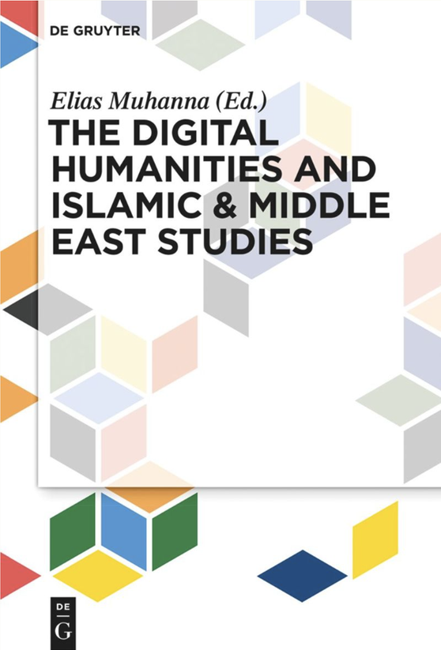
2016 · a collective starting point
The Digital Humanities and Islamic & Middle East Studies
Elias Muhanna (ed.)
Berlin: De Gruyter, 2016 · doi.org/10.1515/9783110376517
Reflection on digital scholarship alongside computational case studies
Most contributions reflect on “the digital” rather than practice it.
Part 1 · State of the field
2016202020242026
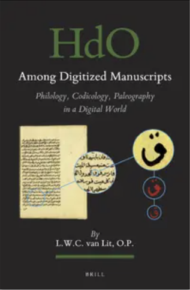
2020 · a handbook of tools
Among Digitized Manuscripts: Philology, Codicology, Paleography in a Digital World
L.W.C. van Lit
Handbook of Oriental Studies 137 · Leiden: Brill, 2020 · open access · doi.org/10.1163/9789004400351
Digitized versus physical manuscripts; twenty online repositories ranked by ten criteria
TEI, IIIF, catalog databases, Python and OpenCV
A methodological handbook whose historical and philological applications remain to be developed.
Part 1 · State of the field
2016202020242026
2024 · a project and its infrastructure
An Unruly Classic: Kalīla and Dimna and Its Syriac, Arabic, and Early Persian Versions
Beatrice Gründler and Isabel Toral (eds.)
Global Arabic Literary Cultures 2 · Leiden: Brill, 2024 · open access · doi.org/10.1163/9789004693579
Variation and mutability across the versions of one text
The digital infrastructure the project needed, including a chapter on its software
A detailed study of variation and transmission across a single textual tradition.
Part 1 · State of the field
2016202020242026
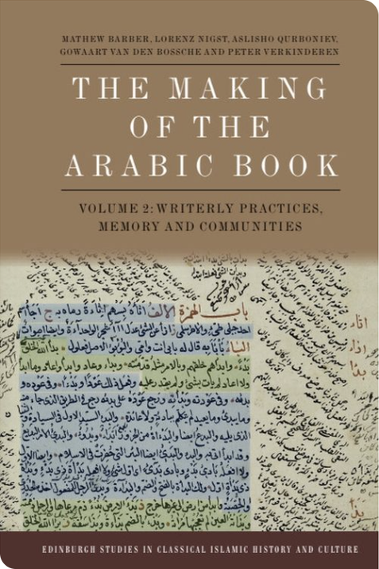
2026 · the KITAB results
The Making of the Arabic Book
Vol. 1:How Text Reuse Built a World Tradition. Sarah Bowen Savant Vol. 2:Writerly Practices, Memory and Communities. Mathew Barber, Lorenz Nigst, Aslisho Qurboniev, Gowaart Van Den Bossche, Peter Verkinderen
Edinburgh University Press, December 2026 · open access
Text reuse across more than a billion words of Arabic, c. 700–1500 CE
How authors reused texts, how they described it, what it did to the tradition
Shared foundationOpenITI: the corpus and methods described in chapter 2 of my book, which also underlie EIS1600
Part 1 · State of the field
2016202020242026
2026 · a proposition for the field
Digital Humanities for Arabic and Islamic Studies: A Proposition for the Field
Why: the scale of the written tradition and the limits of reading it text by text
How: a corpus built for research: OpenITI, mARkdown, URIs, versioned releases
What it gives: term histories, textual typology, linguistic periodization
What should digital humanities in our field be, and what can it give us?
Part 1 · State of the field
A field without consolidation
Articles
Projects
Resources
Methods
Occasional workshops
No consolidation
The field is small: no place offers a critical mass of scholars to move this forward
Exception: the Centre for Digital Humanities (CDH) at Aga Khan University–London, led by Professor Sarah Savant a close collaborator, with whom I have been working on this vision of DH since 2014
Part 1 · State of the field
Part
2
My contributions
Resources, methods, and historical results
The Vision
The work I’ll show you starts from one proposition:
digital Arabic philology allows us to study the Arabic written tradition as a whole through a unified, machine-readable corpus. We can ask how scholarly communities changed, how texts drew on one another, how their typology developed, and how Arabic itself evolved. And we can move from a single passage to patterns across centuries and regions, then return to the passages and their contexts to see what those patterns mean. And never lose the sight of the big picture.
Part 2 · My contributions
In short, this book asks:
«What does it mean for our field when the entire library becomes a vademecum — something that, quite literally, “goes with me” everywhere?»
Chapter 1
Why we should even bother—a question that remains at the heart of every discussion about the digital.
Chapter 2
How we might go about harnessing the new digital opportunities within the field.
Chapter 3
What we can expect to accomplish: 1) trace term usage 2) model textual typology 3) chart linguistic evolution
Altogether, the book proposes a vision of digital humanities relevant to the field of Arabic and Islamic studies. It argues that this venture is not about cheating, but about keeping up with the rest of the world and ensuring that the future of the field remains in our own hands.
Part 2 · My contributions
The Proposition: Four Domains
IDigital AvatarsMachine-readable editions of manuscripts and printed books
IIMetaobjectsCorpora, databases, and linked open data at scale
IIIComputational MethodsStatistics, stylometry, and NLP adapted for Arabic
IVNetworksKnowledge networks: text, person, place, and time connected
The domains connect the construction of evidence with historical interpretation.
Part 2 · My contributions
The main resource
A Proxy to the Arabic Written Tradition
OpenITI as a chronological and geographical representation
Nigst, Lorenz, Maxim Romanov, Sarah Bowen Savant, Masoumeh Seydi, and Peter Verkinderen. OpenITI: A Machine-Readable Corpus of Islamicate Texts, Primary Version. Version 2025.1.9. Zenodo, 2026. doi.org/10.5281/zenodo.18613982
Part 2 · My contributions
The book’s analytical subcorpus
Selected from OpenITI 2023.1.8 for the analyses through 1400 AH / 1980 CE.
2,783 authors
7,058 unique texts
868.81 million tokens after cleaning
Figures describe the selected analytical subcorpus. Most editorial material was removed before analysis.
Part 2 · My contributions
Part 2 · My contributions
Part 2 · My contributions
The same framing at every scale
١A termis understood through the corpus: when does it appear across time and space? who uses it? and who doesn’t?
٢A bookis understood through other books: what other books does it build on? how does it fit among the rest?
٣A traditionis understood through the geographical and chronological layers of books: how does its language change? how do its topics shift?
Part 2 · My contributions
Case 1
A term in time
When did al-kutub al-sittaŧ come to be?
Part 2 · My contributions
Case 1: al-kutub al-sittaŧ (الكتب الستة)
In “The Devil’s Delusions” (Talbīs Iblīs), Ibn al-Jawzī (d. 597/1201) uses lots of ḥadīṯs:
- No isnāds for: Muslim, al-Buḫārī, and Abū Dāwūd
- Full isnāds for: al-Tirmiḏī, Ibn Mājah, and al-Nasāʾī
No notion of al-kutub al-sittaŧ in the end of the 6th/12th century in Baġdād.
Part 2 · My contributions
Part 2 · My contributions
Part 2 · My contributions
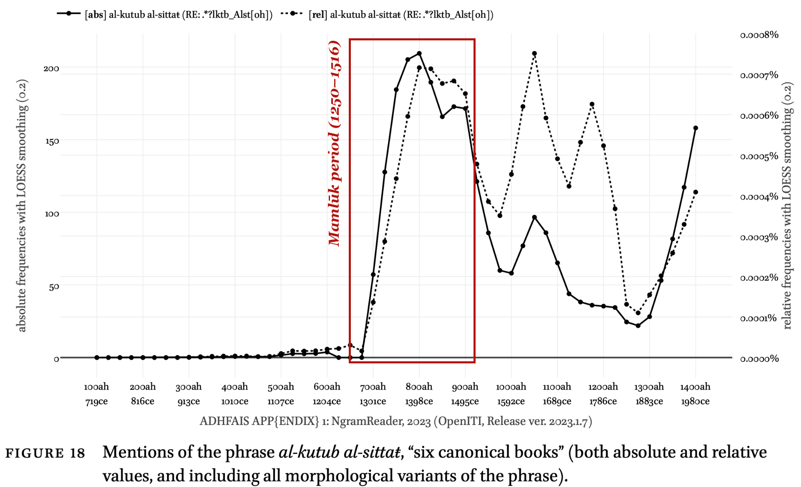
Part 2 · My contributions
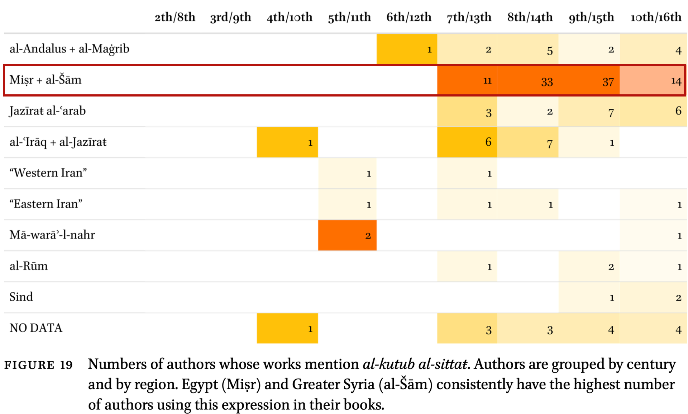
Case 2
A book among books
By modeling major textual types, we can trace their presence in time, identify types of unknown books, and understand the structural composition of complex books
Part 2 · My contributions
Case 2. Modeling Textual Typology
[B] Biographical type (tarājim): mostly collections of biographies
[E] Exegetical type: interpretations of the Qurʾān (tafsīr)
[G] Graeco-Arabic (“Greek-esque”) type (yūnāniyyāt): translations from Greek and works on the development of Greek philosophy in Arabic (falsafat, predominantly Aristotelian)
[H] Historical type (tawārīḫ): mainly chronicles
[F] Legal type (fiqh): a broad variety of legal texts
[L] Linguistic type: a broad variety of grammatical, rhetorical, and lexicographical texts (balāġat, naḥw, maʿājim luġawiyyat)
[M] Medical type (ṭibb): mainly texts on Galenic medicine
[P] Poetic type (šiʿr): mainly collections of poetry (dīwāns)
[K] “Scholastic-theological” type: works of kalām
[Ḥ] Tradition-based type: collections of ḥadīṯ
Part 2 · My contributions
Textual types over 14 centuries
The [F]legal type (represented by approximately 1,600 titles)
steady growth in prevalence over time, peaking around 1000–1200/1592–1786. It is the dominant type in the corpus overall.
The [Ḥ]Tradition-based type (approximately 1,250 titles)
pronounced early dominance, peaking around 400/1010, and then declines sharply.
The [B]biographical type (approximately 1,050 titles)
grows steadily until the end of the Mamlūk period, after which it declines.
The [L]linguistic type (approximately 790 titles)
somewhat more prevalent in the early period but generally remains steady across the centuries.
The [E]exegetical type (approximately 750 titles)
grows gradually, its numbers remaining within a fairly consistent range over time.
— different chapters draw on different textual types
Part 2 · My contributions
A consistently biographical text
Ibn al-Abbār (d. 658/1260), al-Takmilaŧ li-l-Ṣilaŧ · rolling typological assessment
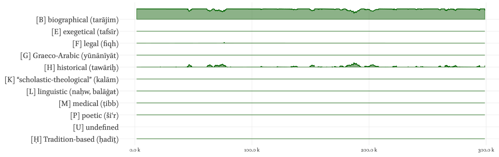
biographical profile, start to end
Each trace: the model’s probability for one textual type in a rolling window of 3,000 words, moving in steps of 200 (0 to 1). Horizontal axis: position in the text in thousands of words; this work runs to about 300,000 words.
A biographical profile persists throughout the work.What happens when an author combines different kinds of material within one book?
Part 2 · My contributions
Different textual types within one argument
Ibn al-Jawzī (d. 597/1201), Talbīs IblīsWhole-work assessment: biographical
chapters
1–4
5
6–8
9
10
11–13
Chapters 1–4: tradition-based reports (ḥadīṯ) establish the necessity of the work.
Chapter 5: scholastic-theological, historical, and biographical material on different beliefs and communities.
Chapters 6–8: legal discourse.
Chapter 10: biographical anecdotes in the critique of Sufism.
Textual profiles help locate the materials an author combines to construct an argument.
The chart detects changes in textual profile; close reading explains what those materials do in the argument. Vertical lines: chapter boundaries. Horizontal axis: thousands of words, about 130,000 in all; not to scale with the previous chart.
Part 2 · My contributions
Value for manuscripts:
When HTR starts working, we will need a mechanism to assess HTR-ed texts automatically: we can potentially identify type, author, exact text
Particularly valuable for majmūʿāt — the most numerous kind of manuscripts, the most difficult to read and analyze
Part 2 · My contributions
Case 3
A Tradition
language change and topic shifts through chronological layers of books
Part 2 · My contributions
Case 3. Periodization
Preclassical c. 622–750
Classical 750–1258
Postclassical 1258–1798
Modern 1798–
Preclassical600–750
Classical750–1258
Postclassical1258–1798
Modern1798–
Where do these boundaries come from? What if we ask the corpus?
Geschichte der arabischen Litteratur, 5 vols. (1896–1943)
Cambridge History of Arabic Literature, 6 vols. (1983–2006)
Encyclopedia of Arabic Language and Linguistics (Brill)
Part 2 · My contributions
Two witnesses
First witness: Corpus
Part 2 · My contributions
Part 2 · My contributions
Two lenses on change
Keywords (TF–IDF): what texts are about Style (MFV): how texts are written
12 distance measures × 2 clustering methods
3,000 random samples (MFV)
72,000 stylometric trees → 48 consensus trees
48 separate keyword tests
Do not trust a tree. Ask what survives across trees.
Contentkeywords / TF–IDF
Stylemost frequent vocabulary
Part 2 · My contributions
Style
stylometry
distributions of frequencies of most frequent words (function words) can help distinguish:
authors
periods
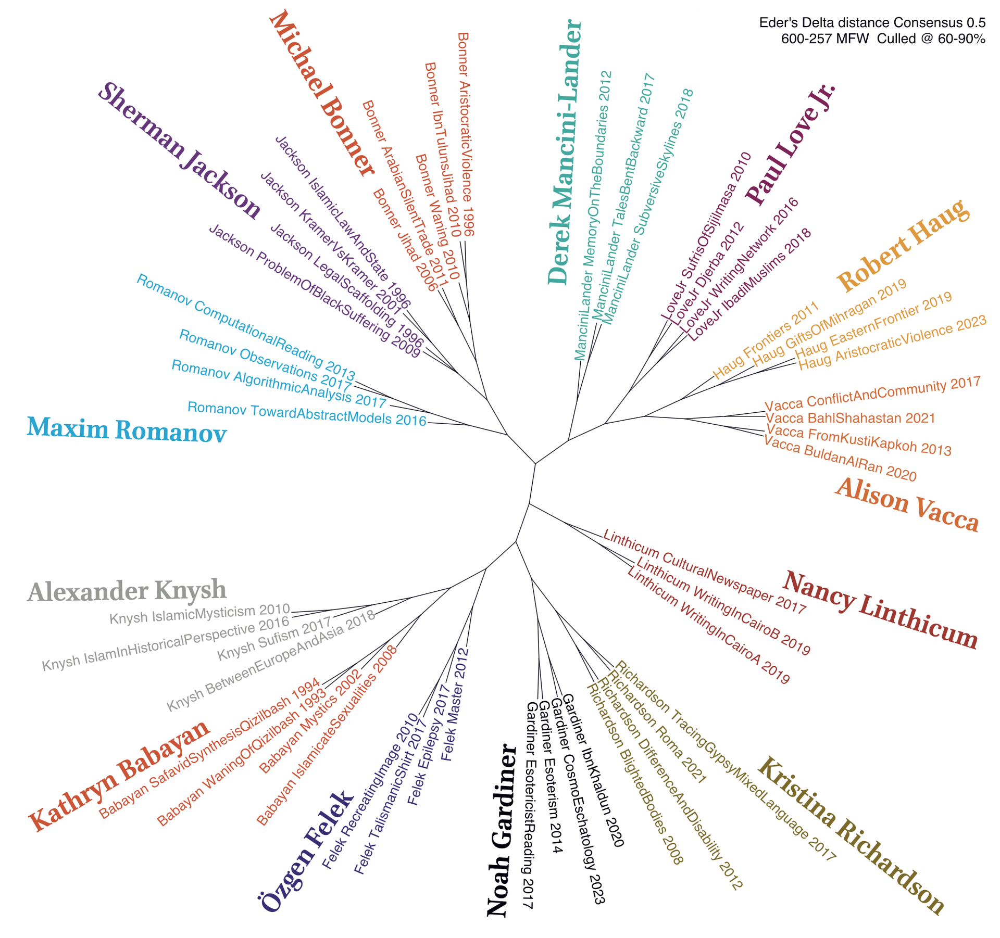
Part 2 · My contributions
Style
stylometry
distributions of frequencies of most frequent words (function words) can help distinguish:
Thematic profiles tend to isolate it as a distinct period
Stylometric profiles tend to attach it to the early macroperiod
The language evolves slower than the written tradition: new distinct themes, but older language
Two clocks: themes shift faster than language.
Part 2 · My contributions
Two witnesses
Second witness: Bio-Bibliographical Collection
Part 2 · My contributions
Second witness: 8,800 authors
Ismāʿīl Bāšā al-Baġdādī (d. 1338/1919)
Hadiyyaŧ al-ʿārifīn c. 8,800 authors; 40,000+ titles A bio-bibliographical model of the tradition
Bibliographical evidence for a separate comparison
8,800authors
40,000+titles
Part 2 · My contributions
c. 600–1200: an Iraqi-Iranian world
> 80% Iraq + Iran
Part 2 · My contributions
c. 1200–1540: a Syrian-Egyptian world
> 55% Egypt + Syria
Part 2 · My contributions
c. 1540–1900: a new polycentric geography
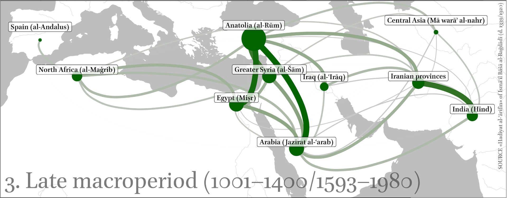
≈ 30% Anatolia
Part 2 · My contributions
Two transitions: 1200–1300 and 1500–1600
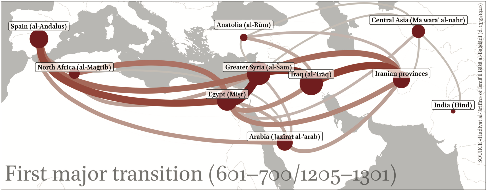
Part 2 · My contributions
Two transitions: 1200–1300 and 1500–1600
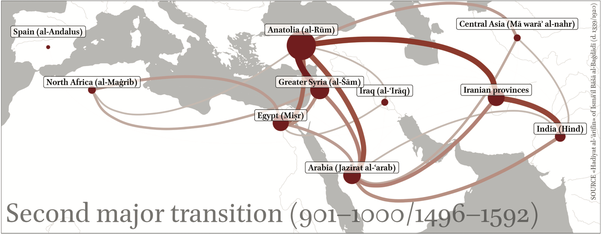
Part 2 · My contributions
Two sources, converging patterns
CORPUS of TEXTS lexical/thematic and stylometric change
REGISTER of AUTHORS cultural geography over time
Textual change and bibliographical geography point to a broad historical reconfiguration.
Part 2 · My contributions
Three long cultural regimes (macroperiods)
Earlyc. 622–1200
Middlec. 1200–1540
Latec. 1540–1980
The early Iraqi-Iranian · c. 622–1200
The middle Syrian-Egyptian · c. 1200–1540
The late Turco-Indian · c. 1540–1980
(with discernable sub-periods inside each)
Part 2 · My contributions
Quantitative evidence and interpretive analysis
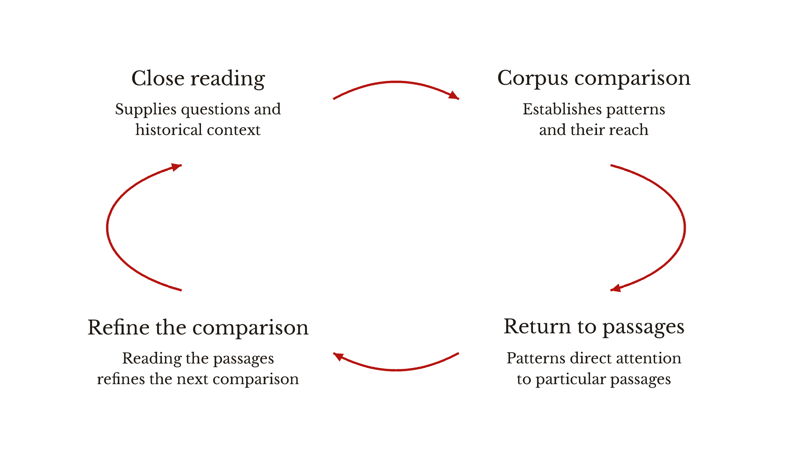
Part 2 · My contributions
EIS1600 · Ongoing research
Evolution of Islamic Societies (c. 600–1600)
Algorithmic Analysis into Social History
Part 2 · My contributions
EIS1600: biographies linked across collections
604,000biographical records
≈140,000identified individuals
285biographical collections
Approximately 104,000 individuals with explicit dates, geographies, and social profiles (based on nisbaŧs)
Compare recorded lives across collections, regions, and periods
EIS1600 team · current project figures, November 2026
Part 2 · My contributions
Al-Ḏahabī and his Andalusian sources
[Placeholder: a couple of slides from the presentation library to follow]
Part 2 · My contributions
3 volumes establish the research foundation
Vol. 1. Methodological Companion:
— Extraction, annotation, reconciliation, and analysis
Vol. 2. Historical Atlas of Social Groups:
— Tribal, religious, professional, and other social groups across time and space
Vol. 3. Analytical Reference on Biographical Collections:
— Their social, geographical and chronological coverage in relationship with other collections
Target: complete drafts by the end of EIS1600 in mid-2027.
Part 2 · My contributions
A related study of monetary equivalents
68,000 monetary equivalents in historical sources
Who paid whom, for what, and how much?
Where and when did the transaction occur?
Approximately 85% can be situated in time and space.
EIS1600 doctoral research · Hamid Reza Hakimi
Part 2 · My contributions
A foundation for sustained research
Social history · Texts · Language
Case studies demonstrating the range of historical, textual, and linguistic questions that computational methods can address.
Biographical data connecting individuals, places, periods, and sources for the study of social history and historiography.
The first three EIS1600 volumes organizing the methods and evidence on which further interpretation and synthesis can build.
This foundation supports a sustained research agenda—from social history, through texts and their typology, to language and its evolution.
Part 2 · My contributions
Part
3
Research at the Escuela
A sustained program in digital Arabic philology
My contribution to the Escuela
Research: social history, historiography, textual typology, and evolution of language.
Instruction and training: apprenticeship, workshops, and summer schools.
Methodological consultations: computational approaches to colleagues’ questions and sources.
Collaborations: joint research within the Escuela and through international partnerships.
Digital Arabic Philology Lab: new instruments for historical and philological inquiry. (Examples: NgramReader&Book Classifier)
Part 3 · Research at the Escuela
Why the Escuela de Estudios Árabes
A scholarly connection: María Luisa Ávila, Luis Molina, and the Prosopografía de los ulemas de al-Andalus helped shape my dissertation methodology.
A community of colleagues: sustained exchange with specialists in Arabic philology, history, and the western Islamic world.
Granada as an international meeting place: a European city with a central place in the history of al-Andalus.
A setting for developing the Digital Arabic Philology Laboratory through research, training, and collaboration.
Part 3 · Research at the Escuela
Instruction through active research
Introduce the methodology and explain what the analysis can establish.
Work through the same texts together, using the same data and settings.
Design an investigation for participants’ own texts and research questions.
Develop the judgment to choose, apply, and interpret an analysis independently.
At the Escuela in 2024 · Computational analysis of Andalusian prosopography
Part 3 · Research at the Escuela
Methodological consultations
Assess what computational analysis can contribute to a question.
Identify suitable sources, data preparation, and methods.
Work through exploratory results and their interpretation.
A practical point of contact for colleagues developing digital approaches.
Part 3 · Research at the Escuela
Collaboration within and beyond the Escuela
Develop joint questions from colleagues’ source expertise and comparative methods.
Connect al-Andalus and the Maghrib with the wider Arabic written tradition.
Build shared studies, supervision, and proposals through existing research networks.
An initial conversation with José Bellver concerns computational approaches to the concepts and relationships in Ibn ʿArabī’s thought.
OpenITI · KITAB · Spanish and German collaborations · International research and training exchanges
Part 3 · Research at the Escuela
A Digital Arabic Philology Lab
Develop instruments for language, textual composition, and biographical evidence.
Connect corpus analysis with passages, sources, and historical context.
Make methods and resources from individual studies usable in further research.
Research instruments can bring several analyses of a text together for rapid hypothesis testing and passage-level review.
Research questions guide the development of new instruments.
Part 3 · Research at the Escuela
Three connected research directions
[1] Social history and historiography Social transformation and its representation in biographical collections and chronicles.
[2] Texts and the written tradition Typology (“genres”), cultural production, transmission, and reception.
[3] Language in historical context Change and variation across periods, regions, and textual types.
Part 3 · Research at the Escuela
[1a] Historical synthesis: social transformation
Did scholarly life change, or did its historians’ vantage point change?
Compare social groups, geographical distributions, and mobility.
Test historical interpretations across different collections.
Connect regional studies into a broader account of Islamic societies.
A research direction emerging from EIS1600’s extensive evidence.
Part 3 · Research at the Escuela
[1b] Historiographical synthesis: shaping the past
How do biographers select, omit, abbreviate, and expand earlier accounts?
How do those choices change the representation of people and communities?
Which patterns reflect shared sources or changing historiographical priorities?
A research direction emerging from EIS1600’s extensive evidence.
Part 3 · Research at the Escuela
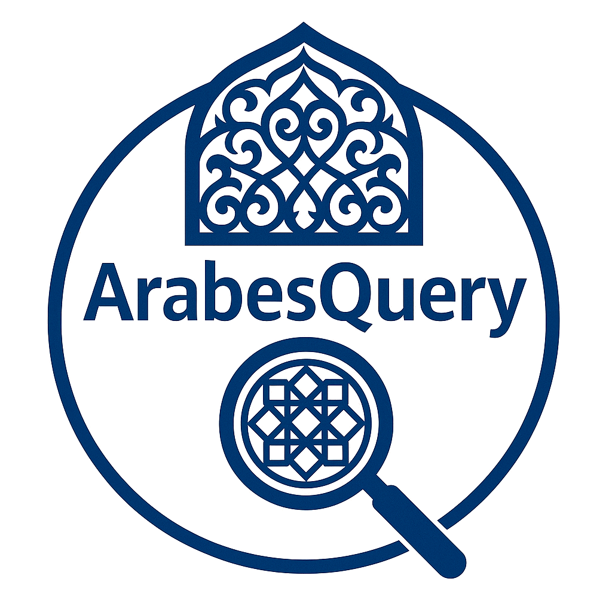
[2a] Computational Typology of the Arabic Written Tradition
Maxim Romanov
Universität Hamburg
ERC Consolidator Grant 2026 · interview
Part 3 · Research at the Escuela
[2a] ArabesQuery
How did its branches of knowledge (ʿulūm) emerge, interact, and change across time and space?
How did changes in the written tradition relate to shifts in scholarly geography and wider social, cultural, and political transformations?
Why did some textual types retain their presence, while others became more prominent or declined?
The Arabic written tradition as an interconnected whole
Part 3 · Research at the Escuela
[2a] ArabesQuery
Reconstructing the tradition through its texts
interpretation refines the profiles
1
Identify textual profiles
Recurring types, and their combinations within works.
2
Test their robustness
Vary the exemplars; compare across authors, periods, and model settings; read the uncertain and mixed cases.
3
Connect the evidence
Texts, bibliographical classifications, and scholarly biographies.
4
Interpret historical change
Disciplines and their relationships across time and space.
Continuity and transformation: a type may stay recognizable while its composition and its place in the tradition change.
Corpus through corpus, bibliography through bibliography, supported with 604,000 biographies from EIS1600
Part 3 · Research at the Escuela
[2a] ArabesQuery
Connecting three bodies of evidence
Texts — OpenITI
The composition of works and the relationships among their textual types.
Bibliographies — the tradition’s own classifications
Authors, titles, and branches of knowledge, including works outside the digitized corpus.
Biographies — EIS1600 and further sources
Authors’ scholarly activities and associations in time and place.
Compare textual patterns, historical classifications, and scholarly lives.
Part 3 · Research at the Escuela
[2b] Expanding the OpenITI Corpus through Automated OCR
automaticaly identfies bibliographical details: author, title, edition, etc.
uses multiple models to OCR the same page
compares multiple OCR outputs identifying and fixing disagrements
produces fully structured, clean texts (paratextual information removed)
Expanding OpenITI from 8,600 to 25,000–32,000 unique texts.
Part 3 · Research at the Escuela
[2c] From production to transmission and reception
Where and for how long did a work circulate?
Which communities copied, owned, read, or taught it?
Which texts were assembled, reused, or adapted together?
Manuscript witnesses connect texts to histories of copying and use.
Selective studies and text-reuse analysis · Broader manuscript collaboration through the proposed ʿAlamāt project
Part 3 · Research at the Escuela
[3a] Language evolution at several levels
How did Arabic change across the written tradition?
Morphology: forms and their distribution.
Syntax: constructions and patterns of combination.
Lexicon: vocabulary, meanings, and contexts of use.
Detailed textual annotation can extend the analyses begun in the book.
Part 3 · Research at the Escuela
[3b] Classical Arabics?
Did Classical Arabic in the West differ from Classical Arabic in the East?
Compare regional usage within comparable periods and textual types.
Trace whether differences persisted, shifted, or converged.
Relate linguistic patterns to intellectual and social contexts.
Part 3 · Research at the Escuela
Sharing the research
Publish historical and philological findings alongside documented corpora and models.
Provide worked examples and research applications through which others can explore the evidence.
Share results through workshops, public demonstrations, and accessible accounts of the historical questions.
Part 3 · Research at the Escuela
Initial priorities at the Escuela (no funding)
Historical research
Continue the work on the two syntheses using EIS1600’s data and foundational volumes.
Typology of the Arabic written tradition
Begin the work on computational typology.
Shared research practice
Shape initial collaborations with colleagues and organize a focused training activity.
The data, methods, and instruments are already in place to begin.
Part 3 · Research at the Escuela
Research leadership and external funding
Spanish national funding · AEI 2027
Develop a Proyectos de Generación de Conocimiento proposal with colleagues, with associated predoctoral funding where appropriate.
European funding · ERC
If ArabesQuery is funded, both historical-historiographical research can continue in parallel with the study of the typology of the Arabic written tradition.
German funding · ʿAlamāt Akademie Projekt
a 25-year project proposal is in active development in collaboration with Professor Beatrice Gruendler (Freie Universität Berlin) and Professor Jens Scheiner (Göttingen)—the project extends the ambition of ArabesQuery into manuscripts.
The AEI application will follow the published terms of the 2027 call.
Part 3 · Research at the Escuela
To conclude
My proposition is that:
digital Arabic philology allows us to study the Arabic written tradition as a whole through a unified, machine-readable corpus. We can ask how scholarly communities changed, how texts drew on one another, how their typology developed, and how Arabic itself evolved. And we can move from a single passage to patterns across centuries and regions, then return to the passages and their contexts to see what those patterns mean. And never lose the sight of the big picture.
Part 3 · Research at the Escuela
Thank you
Maxim Romanov · Universität Hamburg
1 / 83
Keys
→spacePgDn
next slide
←PgUp
previous slide
Home / End
first / last
F
fullscreen
O
overview of all slides
S
speaker notes in a second window
T
type tester: fonts, weights, size
+ / − / 0
text larger / smaller / reset
?
this help
Print (⌘P) gives one slide per page. Add #12 to the address to open a slide.